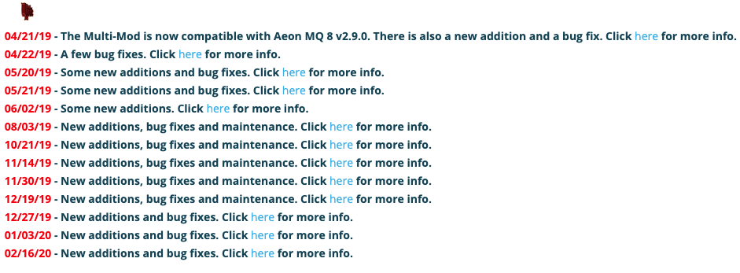

kodi的强大是毋庸置疑的，而多样化的皮肤也是它的强大之一，本篇就对Aeon MQ8皮肤做个设置大篇，当然必须得中文化。

很早就对高清视频产生了浓厚的兴趣。第一次用17寸的CRT看720p的【螳螂】视频那清晰度超过了DVD，从此迷上了，开始研究起高清视频、电影怎么下载、怎么播放、怎么硬解。
现在回顾过去，从当时的思路论坛、CHD论坛到现在的各种PT，也有了客厅家庭影院，有了软路由、NAS，一路走来看着淘汰的DVD影碟、刻录的D5、D9，或许没有什么值得收获的，但是人生不也是这样么，爱好是不可或缺的。
好了，Kodi皮肤：Aeon MQ 8 Multi-Mod现在开始。当然了这些资源都是kodi社区大师们的杰作，皮肤作者@latts9923，我只是学习应用，并让它显示中文，也许有些方法很愚蠢，还请高手多多指教。本篇阅读需要一定的kodi基础知识。先放几张Aeon MQ 8和Multi Mod的原版预览图：


Kodi下载
官方网址：https://kodi.tv/
以下演示基于Kodi 18 Leia Mac版本
http://mirrors.kodi.tv/releases/
按操作系统选择下载
http://mirrors.kodi.tv/nightlies/
按操作系统选择下载
现在最新正式版是18.5版本，下载好了安装就行。
不同系统的Userdata路径
| Operating system | File path |
|---|---|
| Android | Android/data/org.xbmc.kodi/files/.kodi/userdata/ (see note) |
| iOS | /private/var/mobile/Library/Preferences/Kodi/userdata/ |
| LibreELEC | /storage/.kodi/userdata/ |
| Linux | ~/.kodi/userdata/ |
| OSMC | /home/osmc/.kodi/userdata/ |
| Mac | /Users/ |
| Windows | %APPDATA%\Kodi\userdata |
皮肤路径
不同操作系统的插件（皮肤）路径都一样：kodi\addons
Aeon MQ8皮肤下载
方法一
进入Kodi的插件管理（Add-ons）下载，操作路径是：
Install from repository→Look and feel→Skin→Aeon MQ8
目前版本是2.9.0
下载速度视网络而定，下载插件最好挂代理。
方法二
下载zip包然后解压到addons目录下。
然后进入插件管理启用，操作路径：
My add-ons→Look and feel→Skin→Aeon MQ8→Enabel
这样就可以启用皮肤插件了。
先别着急着启用皮肤，我们还需要Multi-mod。
Aeon MQ8 Multi-Mod下载
进入kodi论坛作者发布页。
因为该mod一直在改进和更新，所以没有完整的大包，最新改动是02/16/20。

先下载第一个
04/21/19的稳定大更新版本：然后解压覆盖到皮肤文件夹
skin.aeonmq8里。下面的更新最好都下载依次覆盖，后续有更新就下载覆盖。
现在可以启用看一下初始界面，操作路径：
进入设置：Settings→Interface→Skin
选择后，会显示预览。顶部会提示是否保留设置，我们选择是。首次运行皮肤会进行初始化：
这个过程不要操作键盘、鼠标或遥控器。
还可以纵向排列
这个皮肤是不是漂亮多了！
强调！ Kodi顶部会提示安装一些插件，建议遇到的都安装，下载不了或慢挂代理。
现在还是英文状态，先不急，我们安先装几个插件。
插件的安装
安装插件源
下载插件源zip文件：
mod作者源：Latts Kodi Repo。
强大的Artwork Beef源：Rector Stuff 。
什么是Artwork Beef了解下https://rmrector.github.io/script.artwork.beef/
然后安装源，选择下载的zip不用解压，操作路径：
进入设置：Settings→Add-Ons→Install From Zip File
安装好后的样子
几个插件安装
Artwork Beef
在
Rector Stuff里，进入Program Add-OnsMedia Icons Pack For Aeon Mq 7-Coloured
在
Latts Kodi Repo里，进入Look and feel→Image Collections。
Artwork Beef设置
如有错误请指正。
进入设置：Settings→Add-Ons→My add-ons→Program Add-Ons→Artwork Beef→Configure
General
打开这两项：
Tv shows、Movies等
选择下载各种插图的数量，我选择5：
Artwork Beef还有其他高级的设定，大家慢慢摸索。
中文化
kodi和Aeon MQ皮肤都有对应的中文语言包。我的启用方法可能比较笨拙，请笑纳。
设置中文分为Kodi(自带皮肤)语言包和第三方皮肤语言包。
Kodi设置中文
首先安装Kodi中文包：
进入设置：Settings→Add-Ons→Install from repository→Kodi Add-on repository→Look and feel→Languages→Chinese(Simple)
安装完毕后会提问是否启用，我们暂不启用。选择No
对于自带的皮肤选择语言后会显示乱码，我们先要将字体选择为Arial based再选择语言为中文。先切换回自带皮肤感受下。
- 进入设置：
Settings→Interface→Skin→Fonts→Arial based。 - 进入设置：
Settings→Interface→Regional→Languages→Chinese(Simple)。
Aeon MQ8 Multi-Mod设置中文
Aeon MQ8的皮肤本身就有中文语言包，是在皮肤文件夹下的language的。只是字体不支持中文显示，所以我们需要添加支持中文的字体，我选择的是『方正韵动中黑简体』。然而Mod修改版增加了很多选项，需要汉化strings.po，这个我想摸透了皮肤功能会花时间逐步汉化。
下面开始，先退出kodi。
更换字体法
将皮肤字体文件夹里的关键字体替换为自己想要的字体。进入皮肤目录：
kodi\addons\skin.aeonmq8\fonts，将下载的字体复制四份并修改为以下图片标示的文件名。然后替换，做好原文件备份。
替换后开启Kodi，选择我们的Aeon MQ 8皮肤，进去应该是中文了。
这个方法我没有做很多的测试，可能会有遗漏。
修改字体配置文件法
我们看到fonts文件夹下有很多字体，那些都是皮肤多样性的表现，可惜都不含有中文字体，不做修改的话遇到中文就乱码。皮肤的文字应该展示选择什么字体是由Font.xml这个配置文件控制的，我们修改其中的字体指向就可以显示中文了。
我们把需要的字体复制一份到fonts文件夹下，名字可更改为arial-zh.ttf。
然后用xcode或notepad++打开Font.xml。路径：kodi\addons\skin.aeonmq8\xml。
用正则表达式替换所有.ttf字体为arial-zh.ttf，做好原文件备份。正则表达式如下：
1 | <filename>.*.ttf</filename> #查找所有ttf字体 |
这个办法可以保证所有显示都有中文字体，因为只有一种字体所以皮肤的多样化就不能体现。
完美方法
现在还没实现，因为太考审美，还有就是很繁琐。
方法就是寻找和原字体类似的中文字体，把fonts文件夹里面的字体都替换。甚至把原英文字体和中文字体合并，
strings.po缺失的汉化补充
后续有时间我在汉化吧，或者你想上手可以这样做：
- 复制英文语言包strings.po中的mod字段以下到中文语言包strings.po中。
- 逐个翻译吧。
最后
安装已经完成下一篇会做个对皮肤相关功能开启的教程，谢谢阅读。